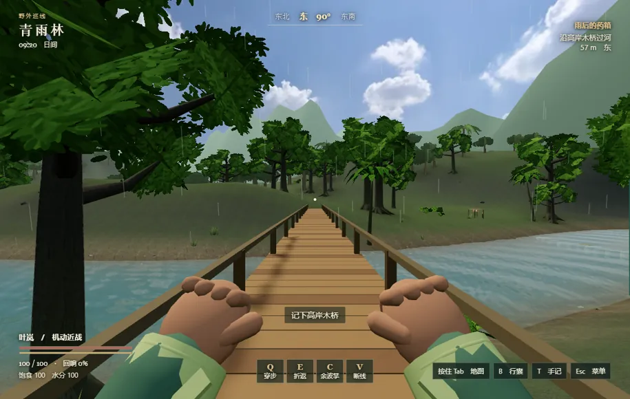

渡棚失物簿
任舟请你寻回上游漂下来的三件货。药箱浮在水面，皮卷只露出系带，空葫芦在礁石后打转。找到后可以归还失主、向商铺估价，或在拾物牌上留言。
第一版只做一件货、一个失主和一次报酬。把货扔回水里、离开地图、再读档，三处都只应有一份货物。
一次送药让城里的店铺、河岸和背包有了往来。下一轮可以让这条路在不同水情、不同时间、不同伙伴手里产生新的选择。
进入白砥城试玩。按 T 翻开任务手册，选择「雨后的药箱」，跟随引导找到药师谢兰心，接下占 4 L 的油布药箱。出西门，沿手记指引找红白水尺。灰色石脊从河心穿过；靛蓝布旗沿岸向上游延伸，通向一座干燥木桥。
想试落水，就背着尚未加固的箱子从石脊侧面下深水。盯住朱红系带，靠近按 R 打捞。水流会把箱子带到下游浅岸，给沿岸追赶的人第二次机会。带回东岸找任舟签收，普通交付得到水尺签，追回药箱会留下回水湾草图。出城前也可以在练家衣坊系背带。

任舟已经记下了一次水位。下一次回到渡口，玩家可以问他今晚哪一路能过，亲自去看看那条判断是否可信。一段熟路就有了值得再走的理由。
任舟请你寻回上游漂下来的三件货。药箱浮在水面，皮卷只露出系带，空葫芦在礁石后打转。找到后可以归还失主、向商铺估价，或在拾物牌上留言。
第一版只做一件货、一个失主和一次报酬。把货扔回水里、离开地图、再读档，三处都只应有一份货物。
四境客栈各有一位记夜人，用短句描述叫声和地形。玩家追一段声源，在安全距离记录首领的动作就能交差。听觉提示同时提供方向字幕。
先做雨林钟蛙。在客栈歇到夜间后，只凭叫声、水边痕迹和字幕找到夜巢；白天回访能看到退去的痕迹。
盐漠的井商收完整水囊，古根衣坊找能缝背带的厚皮，峡谷巡桥人收换索用的纤维。玩家按升数装包，决定顺路交货还是专程带重物。居民只收有明确用途的材料。
先发布一张双向订单，交同一批货支持购买和采集。把最重的一单留给扩容后的背包，新玩家也要有跑得动的一单。
在包子摊拿了东西，可向程麦归还原物，或请附近巡卫见证赔付。帮过店主的人能听到额外消息，冲突中的居民会延续自己的日程。
用当面偷拿、无人目击、主动归还三种情况试玩。一件失物只能结清一次，调解后涉事巡卫恢复巡逻。
一人摇绞盘控制吊索高度，一人把药箱推离岸边。河心的礁石挡住两人视线，需要靠绳上的色扣和声音报位置。玩家可以交换岗位。
先同步一只箱、两枚锚点和一张签收单。两人同时抓箱、任一方中途断线，都能恢复到一致的位置和奖励记录。
用同一段上下两层的渡台做短局切磋。叶岚从柱后逼近，顾潮观察空档放出回波，双方下一局换边。保留角色和装束选择。
先记录不同出生侧的首击距离、格挡次数、高台驻留时间。只有当低层确有两条接近路线，再把地图加入房间选择。